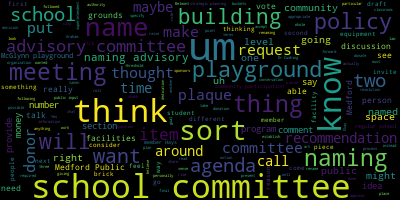
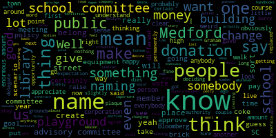
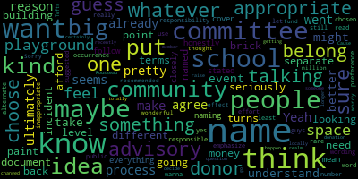

[Graham]: Thursday, February 29th, 2023 from 430 to 530, a strategic planning subcommittee meeting will be held through remote participation via Zoom. The purpose of the strategic planning subcommittee meeting is to draft a naming policy for facilities in the Medford Public Schools. Additionally, a strategic planning subcommittee will discuss community participation slash contribution options for the Numa Glenn Elementary Playground to provide a recommendation to the school committee. This meeting can be viewed through Medford Community Media on Comcast channel 15 and Verizon channel 45 at 430. Since this meeting is held remotely, participants can call or log in by using the following link and call in number. One phone number to call in is 929-205-6099. Enter the meeting ID 940-9894-1899. Additionally, questions or comments can be submitted during the meeting by emailing Jenny Graham at Medford.k12.ma.us. And there's no dot in between Jenny and Graham, just for those who might want to do that. Submissions must include the filing, your first and last name, your Medford street address, and your question or comment. So we have two items on our agenda today, but first I'm going to call the roll. Member Ruseau.
[Unidentified]: Present.
[Graham]: Member Hays. Present. and member Graham present. So three present, zero absent. So we do have two items on our agenda. And the first is to draft a naming policy for facilities within Medford public schools. Sort of, I think I'm thinking of that more as the overarching work so that we have a policy around how this works in the future. And then the second is to have some discussion around whether the school committee wants the playground effort to pursue some sort of community participation or contribution options and what that might be. And I'm thinking of that more as a matter of urgency since we don't have a policy in place that we need to give some thought to that so that that can move forward in one way or another. So the first item is to draft a naming policy. I have actually taken a shot at making a draft so that we have a jumping off point. I am not tied to any of it in particular. And I know that none of you have seen it because we can't share these things ahead of time. Because the open meeting law prohibits that. But I do have it here and I can share my screen. And I'm thinking that maybe reading through the whole thing first, um, would be the right approach. And then we can go back, um, section by section and talk about comments, changes, suggestions, that kind of thing.
[Unidentified]: Um, does that work number or so member Hays? Okay. Let me share my screen. Can you all see my screen? Yes. Okay.
[Graham]: So, I want to thank the Belmont School Committee for giving me a nice jumping off point that I was able to use in the creation of this document. I'll just read it from top to bottom and then we can go section by section. Dedication and naming of school buildings, facilities, and grounds. The school committee has sole authority over the naming and renaming or renaming of buildings, interior facilities, and grounds of the Medford Public Schools. The school committee recognizes that the names of school facilities must be undertaken with care and scrutiny. This policy is intended to ensure that names and or other wording associated with school facilities will promote and or be consistent with the goals of the Medford Public Schools. The naming process should include student, family, community, and staff voices. When naming a school facility, preference is given to those persons, organizations, and events which had a substantial impact on the education of Medford students and persons or events that reflect the increasing diversity of Medford student population. This guidance shall not preclude consideration of names of persons of local, state, or national or international significance. Names of persons employed by the school or city at the time of dedication shall not be considered. The school committee reserves the right to remove any name at any time if it is in the best interest of the district or donor to do so, or to protect the reputation of the district and or the donor. In order for a building, facility, playground, or school grounds to be named that is accompanied by a financial contribution, the following procedure shall be followed. Written request is placed on a regular school committee meeting agenda. The item should specify the intent of the requester and the details of the intended financial contribution. It should offer appropriate background information on the person or organization in the request. Two, the school committee will consider the request and invite public input on it at at least two consecutive meetings before a vote to approve or deny the request is taken. Number three, a gift between the donor and the school committee must be approved simultaneously as the name is voted. Either the standard agreement must specify that the building interior facility or grounds to be named, the duration of the naming period as well as payment terms. And these agreements will be considered for the public record and kept on file by the school committee for access by the public. Um, next section for a building facility playground or school grounds to be named that is not accompanied by a financial contribution. The following procedure shall be followed. The school committee shall pass a resolution identifying the building facility or school grounds to be named. The school committee shall establish a naming advisory committee pursuant to policy BDF advisory committee to the school committee. The naming advisory committee shall adhere to the charge established in forming the committee, including public participation timelines and other criteria. The school committee shall receive recommendations from the naming advisory committee at a regular school committee meeting. The school committee shall by majority vote, adopt a name. The school committee is not required to accept the recommendations of the naming advisory committee. The next section. For a classroom or space within a school building to be named, the following procedures shall be followed. A written request is placed on a regular school committee meeting agenda. The item should specify the intent of the requester and the reasons why this particular name would fit the space. It should offer appropriate background information on the person or organization in the request. Number two, the school committee will consider the request and invite public input at two consecutive meetings before a vote to approve or deny the request is taken. Uh, the school committee may choose to send their request to a naming advisory committee. Uh, and then final section, um, for a community giving program where donors will be invited to give to a project in exchange for a physical dedication. So, um, for example, a brick with the donor name on it, the program rules and required donation levels will be placed on the regular school committee agenda. The item should describe the program placement of physical dedications, donor levels, and other rules. The committee will consider the request and invite public input. The school committee may make a decision at any time provided that public input was received prior, sorry, before the vote of approval or denial.
[Unidentified]: So that is everything that I have taken a crack at. And I would love to hear what you all think Member Ruseau. Thank you.
[Ruseau]: This is good. I also appreciate Belmont and all the other school committees that have drafted policies that we can copy. I greatly appreciate that. The second sentence says the SC, I would increase that to, I would fill that out to say the school committee. And then There's a couple places where the word playgrounds exists, but it's not in the title and not in several other places. And I would just take it and leave it as, I mean, I would just say grounds and skip school grounds or playgrounds just for the less is more. And even the word school, yeah.
[Unidentified]: That's what I would recommend. I don't really have any suggestions.
[Hays]: It seems to cover everything. And it honestly feels like the process that we went through, I wasn't on the committee, the process that was went through with the naming of a school already. So it seems to follow that pretty closely, I think.
[Graham]: Yeah. As I wrote this, I thought about these four different buckets, I guess I would say. If you're going to rename a whole school building, That or name, uh, either right name or rename, um, uh, a whole building, um, that. Seems to, at least in my mind, rise to the level of some sort of advisory committee around what that name should be. But I think there also are times and we want to provide space for the large donor who wants to donate a hundred million dollars to build Medford high. Like, I think we should have a process too. accepting money graciously and think about that, you know, in its own structure, which, you know, I think is a little bit different than that sort of a naming situation without a financial donation associated with it. And that, but I also know, I also know that we have named classrooms in the past. Like I know that there's one or two classrooms that have been named in honor of past school committee members and things like that. didn't seem to necessarily rise to the level of a naming committee, but instead something that the administration might bring forward to us or something like that. And then that final piece of like, how do we allow for community participation in projects like what we have coming up with the McGlynn playground? What does that look like and how would it work? So that, those are the four buckets, which is, Um, you know, Belmont, I think had maybe two of these buckets, but as I thought through it, um, I thought this really covered all the bases around naming. Um, so I don't know, uh, superintendent or Joan or Dr. Cushing, if any of you have any comments, um, that you'd like to share.
[Unidentified]: Dr. Cushing.
[Cushing]: Thank you. I appreciate the opportunity to speak. Just two questions. One, is there anything in here that would, and I don't see it, but that would preclude, say, a bank, the bank purchasing the naming rights, and then it's named after a business, a corporation, something along those lines. That's one question. Number two is thinking... Oh, you're on mute. If a large like that comes on, Would there be a way for us to streamline, say, all right, we have 60 classrooms at X thousands of dollars a piece. We have this learning commons or this cafeteria or those types of things that might be able to be streamlined. I was just thinking in that first paragraph that I can't, not the first paragraph in one of the sections. I'm just trying to get to it, I apologize. I just was wondering if there would be a way to say streamline that as opposed to coming every time or if we would place say like, okay, we have these 15 classrooms, these are the individuals, those are the names, those types of questions. And I don't know if we can do it right now. I think this is, from what you read, really great. So just thought possibly for the future.
[Graham]: Yeah, I think a couple things. if there were such a situation where we had like, you know, many things up for naming, for example, like there were 10 labs or something like that, that we decided we wanted to name. I think that would fall under this like community giving program where there's like some naming in exchange for like a fixed price, like much like what Medford public library just did. And so I think what the school committee would want to weigh in on is the appropriateness of like, the plan or the program that's being put out to the community. Um, and, um, and then like following those rule, like whatever those rules are, we would like consider those approve them and then move on. I think the other thing that, um, You know, when we talk about McGlynn specifically that I wanted to react to was there's been a lot of conversation in the community about how. We could name every piece of equipment on the McGlynn playground, much like we named all the chairs and everything else in the Medford Public Library. And the policy doesn't sort of like lean one way or another on that idea. I think for me personally, like I do hesitate to sell off like pieces of our kids' education in the same way that we sell off like public buildings. I know the schools are a public building, but I feel like there's higher purpose around what goes on in a building. And I think we're, you know, really aware and tuned into the idea that not everything is, comfortable for everyone. And when you start talking about naming classrooms, like, I feel like that sort of wanders into this territory of potentially creating discomfort for students that is avoidable. So I think for me, personally, like I don't love the idea of selling the like the soul of our school and let's sort of like extreme and maybe harsh, partially said, But, you know, and I sort of had that same like personal reaction when people talked about like naming all the pieces of equipment on the McGlynn playground. With that said, like, I do think it's great for the community to be able to participate in buying and feeling ownership over our school spaces, because I think that creates like a sense of pride and ownership and all those things are good. The policy doesn't say anything about that sort of intentionally, because I could see that being really different item to item in terms of how we would sort of consider and approach some of those things. And then we can talk about it specific to the movement playground once we feel like this policy makes sense. So I don't know, I remember, so I saw you have your hand in the air.
[Ruseau]: Yeah, I mean, sort of, you know, you use the example of the playground equipment and I think that setting a, how long is this expectation that your name is going to be on an item is, I mean, a lot of institutions have ended the imperpetuity concept. And I fully agree with that. None of us knows what Medford 100 years from now is going to look like, but we don't want to enter into deciding to name something that means nothing to anyone then. Medford of 100 years ago was a different place too. So, and also like, you know, like for a piece of equipment, I'm fine with you getting your name to stay there in perpetuity if you provide the funds to permanently replace it as it dies. All this equipment has a lifespan. And a plaque to pay for it the first time is one thing. But seven generations from now, replacing at that point a $50,000 swing set, does your name get to stay on that? I don't see why that makes any sense. It would also hamper the opportunity in the future for a school committee to raise money for the next version of the McLean playground. So I think having expectations around and it doesn't have to be like an end date. it could be something like, you know, until the equipment is replaced or, or until the playground is replaced or renovated. But, yeah, I'm sort of slightly off topic. Sorry, I got slightly distracted. I know that somebody put something in the chat, but if they'd like to speak, they'll have to raise their hands and give their name and address. Of course, Member Graham will have to call them.
[Graham]: I'm going to stop sharing for a minute because I think it makes it hard for people to see. I in fact missed whoever it was in the chat. So I do see we have a comment in the chat. I don't know if Paigey wants to provide their name and address in the chat or if you would like to speak.
[Unidentified]: Um, is there any, are there any other members of the public that would like to speak?
[Graham]: Um, One thing that I did put in this policy that I want to call your attention to is if we're talking about the idea of a naming committee, there is, and this was, I believe this was in Belmont's policy as well, a final mention that the school committee will adopt a name by a majority vote and that the school committee is not required to accept the recommendation of the naming advisory committee. That was in fact, um, how we established, um, our last naming advisory committee. And the reason for, uh, that to be there is not to say that, um, the school committee would want to like waste the time of the volunteers on a naming advisory committee. Um, and then blatantly disregard their recommendations, but. to acknowledge that the responsibility of this does rest with the school committee. And if for some reason the school committee felt like the outcome of the advisory committee was compromised or did not align with information that was available to the school committee, the school committee has the authority under the law and would be certainly able to make a different decision about the name. So that's why that's there. I just wanted to call that to your attention. Um, and, um, if anyone, I don't know if any of the numbers have anything they want to say about that.
[Ruseau]: No. Sure. There are certain types of things which we have authority to delegate. We do much of that with the superintendent. But for instance, there are certain things that we approve each year that we can't delegate to the superintendent. We have to approve the handbooks. We can't say somebody else can approve the handbooks. So similar to that, naming of buildings is, naming of facilities is not delegatable is my understanding. That doesn't mean that school committees can't be like, create an advisory committee and say, go at it, whatever you say, we'll be happy with, which sounds like you're delegating it, but the school committee still has to make the vote and the decision. And so that's, I think, why that is there. I think it's also important to note that Memogram sort of mentioned that is that, you know, There have been other naming opportunities, like NASA had one a couple of years ago, and like the number one thing was, or a telescope or something, was something that was like out of the Simpsons and meant to be funny. So winning the vote of an advisory committee, I mean, I don't fathom that will be a similar situation, but, you know, we aren't We aren't the whole advisory committee. We have two or three of us on the last one. So I think that the majority of the members who are not on the advisory committee certainly can't have their rights taken away by anybody. So I think that's, I think it's good that it's explicitly said there, but I can't, I mean, it's hard to fathom a scenario where that happens, but good to have it.
[Unidentified]: Member Hays?
[Hays]: Yeah, I agree. I mean, I think it needs to be in there. I think ultimately, as you both have stated, it is a responsibility of the school committee. So ultimately, we do have to be the ones responsible to make sure that the name, in the rare occurrence, if the number one chosen name by the advisory committee or whatever just wasn't appropriate, or we had some reason to understand that it isn't a name that would be appropriate to use I don't know if we wanna put something in there. And this would, I guess, really just be in an effort for people who read it to understand that we would emphasize or choose a better word, the name or names suggested by the advisory committee that that would be, our preference would be to choose one of those names, but in the event that the name is more inappropriate or I don't know, You guys might have better wording for it, but if we want to put something in there, at least to let the public know that yes, if you're on this advisory committee, it's not just that you're there and we still might just choose an alternate name just because, but that we do take it seriously and we do take the names recommended seriously. Just a thought to put, maybe we could put something in there to that effect. Not that I want it to get too wordy, but.
[Unidentified]: The school committee is not required to accept the recommendations of the advisory committee. It looks forward to supporting recommendations. Oh, sorry, I'm not sharing my screen. Let me just share so you can see what I just typed.
[Graham]: Can you see that? So, I just made an adaption to this second sentence. It says, while the school committee is not required to accept the recommendations of the Naming Advisory Committee, it looks forward to supporting those recommendations whenever possible.
[Unidentified]: up on that number, Hayes number, Michelle? Looks good. Yeah, looks good. Okay. I see that we have a hand in the air.
[Browne]: Eunice, can you give us your name and address for the record, please? Sure, Eunice Brown, Greenleaf Ave. Thank you very much. I'm wondering, you know, looking at this document, and I missed the first few minutes just getting in from an appointment and settling down with dinner, but Where is it written, or is it written anywhere in our charter or our ordinances or anywhere that, or maybe from the Mass General Law, I don't know, that the school committee has the right to name school buildings as opposed to either the mayor at the time or the city council who has ultimate control of the entire municipal budget. So I'm wondering if, you know, does it, does that ruling come down from on high somewhere else that it's the school committee's right and responsibility to be naming school buildings?
[Graham]: It actually does. It is outlined as one of the authorities of the school committee and national law. So that is, that is where it comes from. Oh, okay.
[Browne]: Thank you very much.
[Unidentified]: Yeah, no problem. Good question. Um, any other comments before we move on to our second agenda item? Oh, you're on mute.
[Hays]: Sorry about that. When we, in the event that we did have that wonderful $100 million donor who wants to fund our school and have their name on it, and maybe this doesn't belong in here, but we certainly have had incidents recently, not locally, but Tufts had an incident where they had a big building, had a building named after someone and changed the name. Does that, would that need to go into this kind of a document or is that just totally out of the realm of this kind of, this kind of document in terms of that, that idea, if it turns out, if it turns out that big donor, for some reason we decide isn't any longer an appropriate name to have in our school, what would happen with that?
[Graham]: Well,
[Ruseau]: I mean, number five isn't really about that particular scenario, but, you know, Mass General Law does say we have that authority. We could change the name of any of our school buildings in one meeting with one vote. Well, actually we'd have to have two because we will not have a policy, but we could just show up. Somebody could put a motion on the agenda to change the name. And this says we would create an advisory committee. I take it back. We would, have to create an advisory committee first. I don't think any of those like scenarios, thankfully we don't have like an Epstein High School or in such a scenario, I mean, the committee could change the policy and then allow us to make the change immediately.
[Graham]: Well, I think the policy does say that that the school committee at the opening, right, that has sole authority over naming and renaming buildings. So I think this policy applies to both naming and renaming. And so I think it is covered if for some reason we decided that we needed to rename a building, it would follow this same process, which would be like, if we're gonna, if it's a whole building, we would establish an advisory committee and then go from there. That makes sense. Any other questions, thoughts, comments?
[Unidentified]: Is there a motion to approve?
[Ruseau]: Sorry, Jennie. Member Graham, I see another SC. Just search for SC and change it for school committee. Of course. It hit a space after the SC.
[Unidentified]: All right, we got it.
[Ruseau]: So unless there's a reason to bring it to another meeting, I'd like to make a motion to approve as amended and send it favorably to the full committee at the next meeting.
[Graham]: Do I have a second? Second. Okay, on the motion to approve as amended and bring it to The next regular school committee meeting, we'll do a roll call. Member Hays? Yes. Member Ruseau? Yes. Member Graham? Yes. So three in the affirmative, zero in the negative, motion passes. Superintendent, because this is a new policy, it will need to go on the next agenda for our policy read and then Uh, it will need to be read again at the following meeting because policies require two readings before they are adopted. So, um, it it'll appear on the next two agendas in some form or another February 27th and March 6th.
[Edouard-Vincent]: Yep.
[Graham]: Okay. Um, item number two on the agenda, I'm going to stop sharing. Um, item number two on the agenda is to talk about, um, any community participation program we might want to implement for the McGlynn playground. So if you all remember, we saw a design, um, of the McGlynn playground, um, the design right now, I believe, don't believe had any like particular spaces for like pavers or bricks or anything like that, um, explicitly drawn in. Um, however, I think the feedback that we got, um, over the course of time was that, that. Those could be sort of built in or drawn into the plan quite easily if the committee wished to do so. Um, and as I mentioned at the top of the meeting, there's been, you know, for a bit of discussion about how we could name all of the equipment, et cetera. Um, there's big. My idea around the report out of this meeting would be to sort of provide for discussion to the group a summary of the discussion we have here and put a resolution on the agenda that describes a possible answer to what we want to do with the McGlynn playground, given that, um, this policy isn't quite adopted and we do need to make some decisions quickly so that there would be a place on the agenda for us to talk about that as a broader committee. But my hope was that we could have some discussion here around what we might recommend to sort of inform that resolution that I'm happy to put on the agenda once we are done here for broader discussion with the group.
[Ruseau]: All members up. Yeah, this one's, you know, the last policy, the thing we were just working on, and this, you know, I feel torn, frankly, on the naming of public anything. Because the thing belongs to the public, not a person and not a donor. even if there is a major donor, they don't own it, it still belongs to the public. I certainly understand the desire, I have my name over at the library, I get it. And so I guess for the, and since I can't really find a clear path in my mind as to, is there a universal right answer to this question of naming things on public property? I think that at least I've not spent a lot of time thinking about it, obviously, but if I was trying to think of like, well, how will we decide whether to name or put naming opportunities? I guess one thing I would wonder is like, what's the goal? I mean, if the goal is raising money, I'm happy to talk about that because the amount of money is invariably not life changing and not changing our budget in any meaningful way. And, you know, I'm not saying I don't appreciate donations, of course, but I'm just struggling with like, what's the goal of having, you know, like when we did the new elementary schools, there's a plaque inside, the building committee is listed there. And that makes sense. These people worked an enormous amount of time to get us those schools and to do all the legwork that was required. And, you know, that that makes sense to me, but they didn't have to make a donation for that. If we if we get lots and lots of donation I mean when I went to when I was in high school, it was just the very beginning when there was like a coke machine, and it was coke, it was not coke was happy to be there to get everybody on coke. Obviously i'm not a pepsi guy but um. know, things went to the extreme where every part of, not in Medford, thankfully, perhaps it's a structural issue, I don't know, but in some communities, and I know, like, I believe in Florida, it's like everything's named in the building. It's like you're walking through a mall, and I don't want us to go down that road. And so, like, where we draw the line, like, And I realized that we're probably talking, I assume we're talking about individuals who want to put their, make a donation, have their name like on a brick at the McGlen. But what if it's a corporation that wants to do the same thing? I mean, we probably don't have the problem of dealing with Amazon and major corporations making donations. But we have seen how a corporation can go from being just a company to all of a sudden people running, screaming as if it's a burning building to not be associated with a company. And then we have the Amazon playground at McGlynn. And then we're back in that policy we were just discussing. But the idea of the ability to take a name away, even if there was a donation, is that you know, we're thinking like I give a donation or anybody in this room gives a donation. But when big ticket people give donations, and then you take that there's a contract. You know, we won't just be free to have the school committee make a vote and change the name of it. Because we've got some massive contract where we'd have to pay a huge fine or something. I don't know. I'm going way down the rabbit hole on this. But what's What's the goal of this naming at the McGlynn? Seems really important. If it's to recognize all the people that did the work, that's not a donation situation. I guess that's where I'm stuck.
[Graham]: You know, I've personally done some thinking about this because I was on the playground committee and this has obviously come up a couple of different times. And I think two things that seemed that sort of seemed like they might be reasonable. One would be to allow folks to donate a brick for some like reasonable amount of money with like the goal, back to the goal being community participation in this playground that we want the community to be really proud of and to use and to take care of and all of that. So that's like one, I think possible thing that doesn't feel oppressive. Um, the other thing that, um, I thought about was that we could invite larger donors, um, to support the program and put some sort of like commemorative plaque. Like at the outside of the playground, cause it will be sort of gated off. Right. So, and that plaque could contain. Like the names of the playground committee that contributed to the, to the work in the build. And it could also thank significant donors, like, you know, at some threshold, like if somebody wants to donate $10,000, like we would agree to put their name on the plaque or something like that. So that there's a place to say thank you for the people who, um, or the, or the organizations who did want to make a significant donation. Um, and maybe there could be like, I don't know, sponsors and silver sponsors and bronze sponsors, something like that. And that, but it would be a place that is sort of independent of the play space that kids are gonna be like sort of running and romping around. So appropriate commemoration, but stopping short of like a plaque at every piece of equipment that's been sold off because that doesn't feel appropriate. as palatable for me anyway. So that's some of the thinking that I've been doing. I don't know, member Hays, if you have any thoughts about that.
[Hays]: Yeah, so I think going back to a member Rousseau's question, I guess then the point of it is to raise money. Cause if we're looking at different donation levels, getting different recognition than it is. And I guess part of what I was, what occurred to me as we were talking about this, and I can't remember whether this was already in the plans for the playground and another space, when we start looking at families being able to donate a brick or for $50, whatever, there are a lot of people who couldn't afford that. So I'm wondering if we want to, and maybe this is separate from what we're talking about now, I don't know, but make sure we have a space that's maybe just anyone in the community wants to, I don't know, paint a brick, paint a, I don't know, because I do think we get to a point where it's the people who have the money who can afford to do it. And if we want to look at, again, if we're going back to this is a community playground, it belongs to the school, it belongs to the community, the kids, kind of making sure we're not excluding people through some of these. But I like the idea in terms of the big donors, which you were talking about just a minute ago, I think that idea of maybe having a separate space where we have a plaque that recognizes whatever we determined to be those, those big level sponsors and those who contributed time and energy into it. I like that as opposed to having it, like you said, I think if we had every piece of equipment named or, you know, people could buy the swing set or then you do, it does feel like it gets into a pretty more of a commercialized almost playground, doesn't feel as much belonging to the community.
[Graham]: Actually, I think that's a really great point. And I liked the idea of, some sort of public art installation sort of maybe instead of like bricks with people's names on them, right? So that there's some way, and I think we would have to talk with the architects about that, but maybe there is some way to create some sort of public art component to the playground instead of bricks. which break and do what breaks do. So member Rizzo.
[Ruseau]: Yes. So I want to kind of look at the most recent thing where we raised a lot of money, the library. No, I didn't raise any money. Let's be clear. I just donated. You know, well, I don't know if it comes across as petty, but I'll get over it if somebody thinks I'm petty. As a proportion of my net worth, I gave vastly more than Bloomberg did. That's just a fact. Frankly, almost everybody who made a donation, probably more than 100 bucks, gave more as a portion of their net worth than Bloomberg did. And guess what? Because of the way the tax laws are written now, you can't even deduct it, but Bloomberg surely deducted every nickel. And I'm grateful for the money, for the library, and I'm not here to rehash that story. But I do think the story that, that the rich get their names at the top of everything, giving an amount that means nothing to them and other people give what is truly like real portions of their income and pay for it through, you know, fewer vacations or whatever else. It really deeply bothers me the way we calculate who gave the most And nobody in this room that I'm aware of doesn't understand that from your own personal experience. So I understand the desire to rake in more dollars, but do people like Bezos need his name on just one more thing? It won't matter. All it's doing is creating a permanent, you know, royalty, essentially. You know, when Jeff Bezos dies, assuming he does with all the people like him do, his name will be on thousands, if not hundreds of thousands of facilities around public things in our country. That's just guaranteed to happen. And I just don't know that we want to participate by adding one more little spot that gets to be marked, like it's a dog marking his territory. And do I think that would be different if somebody came in and said, I'd like to pay for a new high school? Well, yeah, that is different. Because first of all, even the richest people in the world, that would be something they would notice. And we would obviously have a rather unique conversation about that. Boy, I wish somebody was watching who could do that. But I also think that, you know, for those of us that live in Medford, and actually we all live in a community somewhere, and for most of us, you know, we are literally not from the land that our town is on. And we walk around town, you know, just out on a walk yesterday, and it dawned on me that I don't know of any streets and I'm going to regret saying this, but very few streets, I'll say that, have any Italian names, yet Medford has like a massive history of like, it was an Italian town for a very long time. Well, why is that? Because people that were here before get to permanently be the definitions of the place. And I'm not sure if I'm getting my point across, but there's another little side point too is, you know, the amount of the money of the bricks is certainly, you know, that's a thing, but we're sort of creating a, here's a list of people that mattered in Medford, right? I mean, when we walk to the library and see all those names, if you don't know anything about Medford or the library, you look down and you'll say, these are people that cared about Medford, mattered about Medford, had money to give in Medford. And there is an enormous amount of privilege in being able to do that. As member Hays said, there's also an enormous amount of privilege to even know you could buy one, a brick. I mean, who bought the bricks at the library? The people who knew people who were on the library committee, who were elected office, you know, the teeny tiny segment of the population even knew they were available. That's almost certainly true. And everybody who essentially was connected and already, you know, in a better spot than a lot of other people, they're the only ones who even had the opportunity. So it just can create this weird pink, just like the street names, it creates this weird picture of a place that makes you think, that, well, I mean, I live in Orchard Street, so that's not a name of a person, but for all these names on our streets, other than the ones that became governors, like, who are these people? It doesn't feel welcoming either, and sort of this weird, like, hey, here's the group of people that matter here. I'm sounding really down on gifts. I do want gifts. I just want us to think through what it means to stick a name on something that doesn't belong to us. It doesn't belong to the school committee or any person in this meeting. It belongs to the public. And I just don't think we spend any energy thinking about, you know, we sometimes talk about public goods, you know, public education, the protection of the police and the fire. Those are all public goods. And I don't see anybody suggesting we name the fire stations or the police station or city hall, because it's so clear that that is public good and those are off limits. But then when we move into the schools, somehow it gets a little softer and we start deciding to just not do what they do in the rest of government. Although I know we have the Tip O'Neill building in Boston, so the federal government doesn't agree.
[Unidentified]: I'll stop talking, we'll be here all night.
[Graham]: Dr. Cushing, it's still possible to ask the architects to think about like an art installation space, is that right?
[Cushing]: Yes, yes. The final design is in process, but there are also enough perimeter spaces and the ultimate vision that The one thing that I've really wanted is to make sure that the walkway behind the building is as sealed off as possible, except for fire lane. So there will be spaces on either side of that, that now what I would consider only fire access and student access area where we could definitely have an art installation or anything along those lines. Also, I will say that the various departments and agencies of Medford and the mayor's office have committed to the funding for this program. And so anything additional from a brick or something along those lines would simply say, allow us to say, I don't know, install other benches or install maybe a bicycle rack that fits the vision of what we're looking for. We're working on that anyway for the McGlynn, but just trying to see if there are other ways that we can um, help to really tie this up with a really beautiful bow. Um, so, you know, it's not a make a break, but, uh, I would say the bricks just stick with that idea for a second. I really appreciated what member Hays said. I'd never thought of it that way. And it really helped to open my eyes. I have to say, I really appreciate that. Um, so, you know, I see that as just an opportunity to remember a loved one or, and I know member McLaughlin has mentioned this a number of times. of a family who lost a child, and just as an opportunity to have that remembrance. But to go to your point, yes, we are still in the design phase, but we can definitely add things to it.
[Graham]: Thank you for that. Dr. Hortensen?
[Edouard-Vincent]: Yes, I just wanted to weigh in when member Graham you started sharing about potentially having a inclusive art experience, and right now we are working on, I talked about it last week in last week's memo the mosaic. And this past Wednesday, students went with our coordinator of finance, Suzanne Fee, and they're gonna do a middle school day and they're going to do a high school day as well. And so some of those mosaics she shared with me for families that weren't able to come to the high school to work during that timeframe, they are going to provide some opportunities for additional pieces of the mosaics to go to the respective schools. So by the time this piece of art is completed, students from all of the schools will have had an opportunity to at least, maybe not every single student, but students will have had an opportunity to have participated in this beautiful mosaic that's going to be created. And so as you were talking about the different ways to include the community, and not thinking about cost per se, exception of the arts materials, I was thinking that that could be another beautiful way to beautify the space and have it be inclusive of the students and members of the community and you know, art is beautiful. Maybe it could be something where the art is interchangeable, you know, twice a year or something like that. They could switch it up for the seasons. And so I'm thinking that there could definitely be a lot of creative ways to have that community footprint and have it beautify the space through the arts. So I just wanted to share that as a possible suggestion.
[Graham]: So I am, as I'm listening to everybody's comments, I'm wondering if our recommendation to the school committee is that we invite donors to donate and plan for a plaque that recognizes them. And maybe we come up with like a gold, silver, bronze sort of sponsorship level, or maybe we come up with more playground oriented names for those levels. And which I think might be fine. Um, so maybe we could, uh, think through that, um, and, um, encourage, you know, those donations, you know, and note that, um, we'll have a commemorative plaque that would, you know, identify them on the plaque and, um, leave it at that for, for our recommendation for the playground. I think. you know, to Dr. Cushing's point, like rounding off the playground to make sure that like it has bike racks and, you know, all, you know, all the like little things that add up, um, or if we are able to, you know, raise some more money, we probably could plant more mature trees than what the trees are that we're going to be able to plan under the, under the basic budget. So some of those things, I think. Make it make sense for us to go ahead and try to, um, raise money, I think there's also going to be some disruption during the building of the playground where we're going to need to provide some equipment for students so that they have adequate play access while the playground is under construction that costs money. I don't believe that's in the estimate, Dr. Cushing, but I could be wrong. So there are reasons to raise money beyond the sort of estimate that The city has committed to, and they it's, it's amazing that the city has committed to this. And I'm always reminded in these moments that sometimes out of really terrible things like COVID come things like ARPA money and new playground. So, um, hopefully, um, that holds, um, particularly as construction costs rise, but I, I. That's sort of where I'm at in terms of the conversation I've just heard is, do we establish some levels and promise plaque that would provide us the sort of space and the leeway to round out the playground and put out that call for public schools, from the superintendent's office to be able to do that. So I don't know.
[Unidentified]: what you all think about that proposal, but that could be something that we push forward.
[Hays]: I like that idea. I would agree with that. OK.
[Graham]: Are there any thoughts about those threshold levels that we would? I mean, I think if you're going to put everybody on a plaque, it could be very long. If any dollar amount ends up on the plaque. I don't know if we have any immediate thoughts. I'm also happy just to put a draft out there and see what the committee thinks about it too. I know it is 5.30 and we're at our meeting time.
[Edouard-Vincent]: I think you should probably have four levels. You should just include a platinum level because you never know. You may have a extra generous person who wants to give at that level and If people are willing to do that to support the schools, to support the community, I think we should recognize them. I don't know what the monetary amounts would be, if it would be like 10,000, 25,000, 50,000, and 100,000 plus or something. I don't know how you'd want to do that. If people are willing to be generous, they could be spending the money on a trip around the world or something else. If they're willing to give back to the community, I, I, I, I feel strongly that we should be able to, um, acknowledge them. And, um, you know, we may end up with so much that there's extra money to, to go towards another playground. I mean, wouldn't that be wonderful. And put that in that, you know, if we reach whatever the goal is, whatever the magic number is that, um, people wanna get to, if we reach that number, then say, you know what, let's tackle the next playground that's in desperate need of an upgrade or something like that.
[Unidentified]: Okay. Any last thoughts on dollar thresholds? Okay.
[Graham]: Um, I will. So I think, um, this conversation obviously like in the minutes, um, and in the description of, um, The, um, the readout of the subcommittee meeting will sort of provide people some of the things that we've already thought about. I will put, um, an agenda item on a resolution on that lays out. some idea of what that set of thresholds might be. I'll actually take a look around and see what others have done. And then we can wordsmith it and all of that good stuff with the larger committee. So I don't think we need to take a vote on any of that.
[Unidentified]: And with that, do I hear a motion to adjourn?
[Graham]: Motion to adjourn. Second. Motion adjourned by member Hays, seconded by member So. Roll call, member Hays? Yes. Member Ruseau?
[Unidentified]: Yes. Member Graham? Yes. Meeting is adjourned. Have a good night, everyone. Thank you. Have a good night.
|
total time: 25.92 minutes total words: 3887  |
total time: 16.6 minutes total words: 2495  |
total time: 4.16 minutes total words: 756  |
total time: 3.57 minutes total words: 500 |
{kind=link}
{kind=link}
{kind=link}
{kind=link}